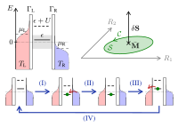
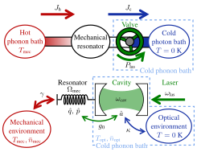

Juliette Monsel¶

I am a postdoctoral researcher in Janine Splettstoesser’s group in the Departement of Microtechnology and Nanoscience at Chalmers University of Technology, in Gothenburg, Sweden.
I did my Ph.D. under the supervision of Alexia Auffèves at the Institut Néel (CNRS, Université Grenoble Alpes) in Grenoble, France. My thesis dissertation, entitled Quantum Thermodynamics and Optomechanics, was awarded a Springer Thesis Award and published in the Springer Theses series in 2020.
My research interests are:
quantum thermodynamics
quantum open systems
optomechanics
quantum optics
electronic transport
News¶
New preprint – February 24, 2022
Geometric energy transport and refrigeration with driven quantum dots
Juliette Monsel, Jens Schulenborg, Thibault Baquet, Janine Splettstoesser
We study geometric energy transport in a slowly driven single-level quantum dot weakly coupled to electronic contacts and with strong onsite interaction, which can be either repulsive or attractive. Exploiting a recently discovered fermionic duality for the evolution operator of the master equation, we provide compact and insightful analytic expressions of energy pumping curvatures for any pair of driving parameters. This enables us to systematically identify and explain the pumping mechanisms for different driving schemes, thereby also comparing energy and charge pumping. We determine the concrete impact of many-body interactions and show how particle-hole symmetry and fermionic duality manifest, both individually and in combination, as system-parameter symmetries of the energy pumping curvatures. Building on this transport analysis, we study the driven dot acting as a heat pump or refrigerator, where we find that the sign of the onsite interaction plays a crucial role in the performance of these thermal machines.
New article – June 25, 2021
Optomechanical cooling with coherent and squeezed light: the thermodynamic cost of opening the heat valve
Juliette Monsel, Nastaran Dashti, Sushanth Kini Manjeshwar, Jakob Eriksson, Henric Ernbrink, Ebba Olsson, Emelie Torneus, Witlef Wieczorek, Janine Splettstoesser
Ground-state cooling of mechanical motion by coupling to a driven optical cavity has been demonstrated in various optomechanical systems. In our work, we provide a so far missing thermodynamic performance analysis of optomechanical sideband cooling. We examine various performance quantifiers to get a full picture of the thermodynamic process and use them to benchmark different experimental platforms. Importantly, in addition to the standard optomechanical setup fed by coherent light, we investigate two recent alternative setups: replacing the coherent laser drive by squeezed light or using a cavity with a frequency-dependent (Fano) mirror.
This work arises from a collaboration between Janine Splettstoesser’s theoretical group and Witlef Wieczorek’s experimental group to investigate thermodynamics with optomechanical setups.